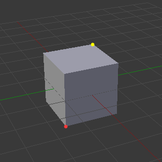
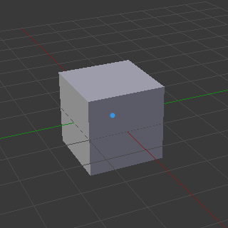
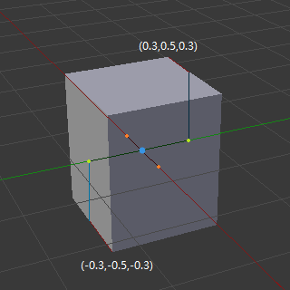
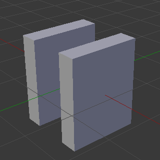
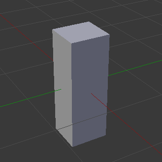
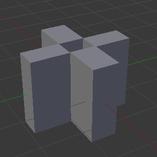
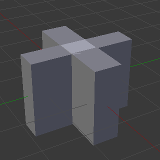
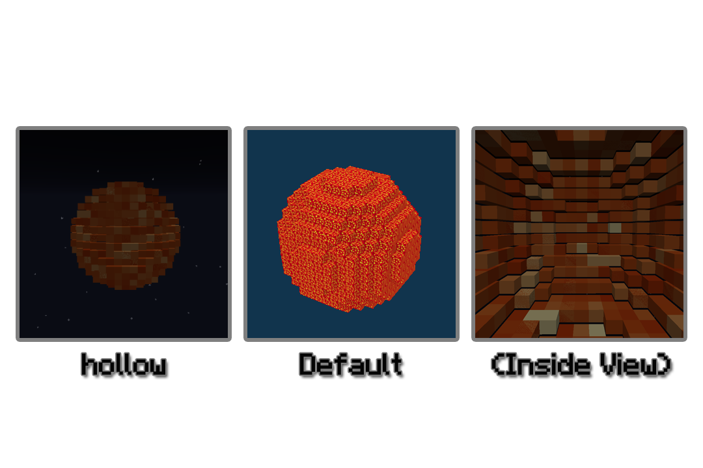
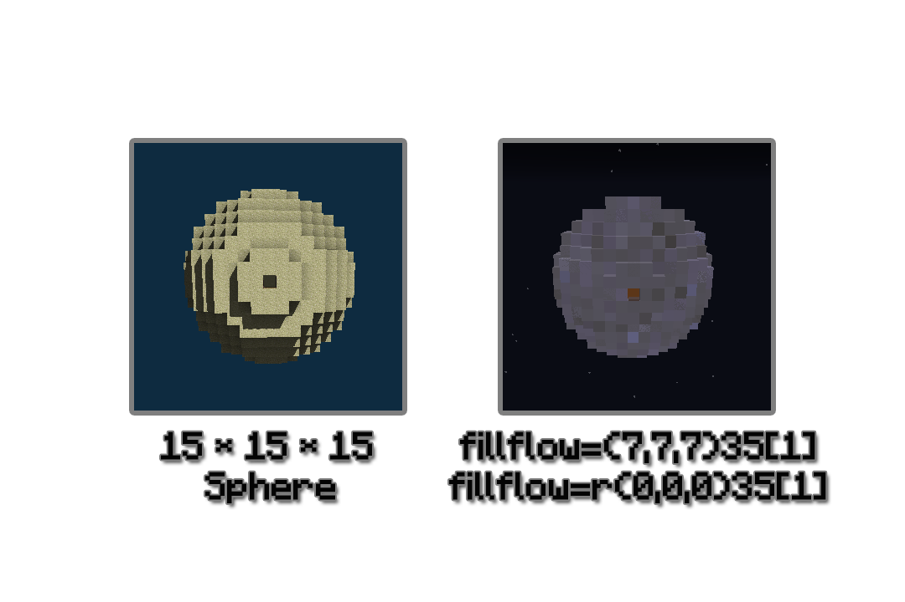

Block2Json 详解
—— 对软件处理过程的详解
名词释义
Block2Json 的处理范围涵盖了方块与Json模型，其中存在了很多模糊概念。为避免歧义，详解中将会使用一些特有名词。这些名词可能只会出现在详解里，与Wiki中并不冲突。它们的释义在下方将一一解释。
有关于Json模型的名词遵照【Wiki - 模型 - 方块模型】的官方翻译。
模型
Json模型
方块组
方块元素模型
元素
元素
方块元素
模型枚举元素
立方体元素
方块
方块
方块信息
立方体元素
方块元素
方块信息
方块
方块信息
元素模型信息
即 Json模型文件 ，Block2Json最终生成的文件。是可以被Minecraft读取的模型。
是处理中的一个过程量，储存所有方块元素。方块组只存在于处理过程中，是三维集合，可以以坐标形式储存方块元素。
非Json模型文件，是指./ModelInfos文件夹中的模型信息文件(ModelInfo.json)被读取所匹配的方块元素的模型集合。
从资源定义的角度可以理解成所匹配的所有模型枚举(An Enum)。这个模型集合被储存在方块元素中，作为它的模型。还要注意的是，方块元素模型是一个模型枚举元素的集合，并非元素。
即Json模型中"elements"列表下的"An Element"。方块元素的最终表现形式。根据一个模型枚举元素所生成。
是处理中的一个过程量，储存于方块组中，储存着方块元素信息和方块元素模型。方块元素的详细信息来源于所匹配的方块信息，模型也来源于所匹配的方块元素模型。
是指./ModelInfos文件夹中的模型信息文件(ModelInfo.json)中定义的"An Enum"下"Elements"中的"An Element"。方块元素模型也是模型枚举(An Enum)中一个基本元素。本质上可以理解为是一个长方体
对方块元素忽略其模型(即其方块元素模型)，笼统视为立方体(1*1*1)。
是方块文件中的方块，可以理解为Minecraft中一个方块。
是指./BlocksInfos文件夹中的方块信息文件(BlockInfo.json)被读取所匹配的方块元素的信息。指定了一个版本下的一个方块的名称、数据、所引用的方块元素模型和材质。
同上.
同上.
是方块文件中的方块，可以理解为Minecraft中一个方块。
是指./BlocksInfos文件夹中的方块信息文件(BlockInfo.json)被读取所匹配的方块元素的信息。指定了一个版本下的一个方块的名称、数据、所引用的方块元素模型和材质。
是指./BlocksInfos文件夹中的模型信息文件(BlockInfo.json)被读取所匹配的元素模型的信息。定义了一组模型枚举。
表达式
Block2Json 在资源文件、命令行中都涉及到了许多类型的表达式，它们的表示方式、功能各不相同，下面将一一介绍。
cmd命令行
- fillPath即方块文件的路径，例如"C:\Users\Administrator\Desktop\foo.nbt"。
- command即命令，用空格隔开每条命令，例如"smooth nopause"。
引用资源文件
- fillName是相对于对应文件夹下的路径，例如"A.json"表示就在该文件夹下的A.json，"A/B.json"则是在名为"A"的子文件夹下的"B.json"。
- .json是不可省略的后缀。
- '/'正斜杠是正确的分隔符。（在0.1.2前是反斜杠）
方块集合
- BlockTag.json即引用方块标签文件(BlockTag.json)。方块集合中将加入此方块标签文件(BlockTag.json)中所表示的所有方块。
- Id[Data]表达一个名为Id方块，数据值为Data的方块。如"1[0]"或"minecraft:oak_trapdoor[facing=north,half=bottom,open=false]"。是一种十分宽松的表达形式。
- Id、Id[]、Id[x]表达的可以是多个名称相同，但数据值不同的的方块，是一种宽泛的表达方式。例如"1"则对应所有石头。
- 1. Id和Data不管是数字还是字符都是可以的，只要能对应方块信息文件(BlockInfo.json)中定义的信息即可。
- 2. Id如果没有命名空间，默认加上"minecraft:"前缀。
坐标运算
- 数学表达式需要有解。
- 继承Size[Data]是可以继承方块信息文件(BlockInfo.json)中一个方块信息中的"Size"。可用"$sx"、"$sy"、"$sz"分别继承"Size"中的"X","Y","Z"。
cmd命令行就是一开始你需要输入的命令，其格式为：
[filePath] [commands]
ep:
C:\Users\Administrator\Desktop\foo.nbt smooth pause fillflow=r(0,0,0)air
这是一个标准的命令行格式，先要知道具体作用？参照【命令行】的子目录。
值得一提的是文件路径中若含有空格，则路径需要用引号围起来才能正确读取，例如'"C:\Users\Administrator\Desktop\f o o.nbt"'。将文件直接拖入控制台内，是获取文件路径最快捷的做法。
引用资源文件 ，包括引用方块信息文件(BlockInfo.json)、模型信息文件(ModelInfo.json)、方块标签文件(BlockTag.json)。
[fileName].json
ep:
A/B/C/D.json
子文件夹"A"的子文件夹"B"的子文件夹"C"下的"D.json"。
方块集合 ，用于定义方块滤器(filter_blocks)的过滤对象、和模型信息文件(ModelInfo.json)里条件中定义"A RelativeBlock"。
BlockTag.json;Id[Data]; ...
ep:
G.json;1[0];stone[1];minecraft:oak_trapdoor[facing=north,half=bottom,open=false]
表示：标签"G.json"下全体方块 + 石头 + 花岗岩 + 底部未打开朝向北面的橡木活板门。
进一步解释一下单方块的表达式"Id[Data]"：
坐标运算 ，存在于和模型信息文件(ModelInfo.json)里定义模型枚举元素的"from"和"to"。
任意数学表达式即可
ep:
($sx+$sy)/0.5+0.233*$sz
这个表达式我也不知道什么用途，只是展示一下基本的写法。
"From"和"To"是字符串列表，详情参见【Wiki - ModelInfos】。
列表中第一个表达式表示"from"或"to"中的X轴坐标，第二个表示Y轴，第三个表示Z轴。这个坐标不是相对于整个Json模型或者方块组而言的，而是相对于将方块元素视为立方体元素后的元素中心(0.5,0.5,0.5)。
读取资源
Block2Json 每次运行后，首先进行的是读取资源。这个过程在输入命令之前。资源文件存在于外部文件夹中，包括/BlockInfos、/ModelInfos、/BlockTags、/BiomeList。
你可以在程序运行前，对资源文件增加、修改、删除。资源文件使用的是Json格式，【Wiki】中对其中的Json标签有详解。资源文件是高度可自定义的，在本项的子目录中，我将详细介绍如何自定义这些资源文件。
ModelInfo - 元素模型信息
首先介绍元素模型信息，是因为它是最基本的信息，而且也是目前结构、内容最复杂的信息文件 。在Block2Json的架构中，联通方块文件与Json模型的桥梁就是每个方块元素的模型，因此方块信息文件(BlockInfo.json)需要对元素模型信息进行引用以定义一个方块元素的模型。在经过识别、匹配等过程后，通过元素模型信息最终能够生成方块元素模型。
【Wiki - ModelInfos】中详解了标签结构和意义。本篇将用例子的形式进一步解释，教你玩转元素模型信息。
详解
这是Half.json，也是自带的最基本的模型。
{
"Enums": [{
"Conditions": [{
"Params": "Default"
}],
"Elements": [{
"from": [
"-$sx",
"-0.5",
"-$sz"
],
"to": [
"$sx",
"-0.5+$sy",
"$sz"
],
"Texture": "A"
}]
}, {
"Conditions": [{
"Params": "Bottom"
}],
"Elements": [{
"from": [
"-$sx",
"-0.5",
"-$sz"
],
"to": [
"$sx",
"-0.5+$sy",
"$sz"
],
"Texture": "A"
}]
}, {
"Conditions": [{
"Params": "Top"
}],
"Elements": [{
"from": [
"-$sx",
"0.5-$sy",
"-$sz"
],
"to": [
"$sx",
"0.5",
"$sz"
],
"Texture": "A"
}]
}]
}
对于这个文件，结合Wiki，我们首先来理解一下其中的结构。
是一个列表，储存了所有模型枚举(An Enum)。
之所以被称为模型枚举，是因为匹配它还是需要条件的，这便是Conditions。模型枚举可以拥有一系列模型枚举元素(An Element)，储存在了Elements。
一个例子(通用结构)：
{
"Enums": [{
"Conditions": [{...}],
"Elements": [{...}]
},{
"Conditions": [{...}],
"Elements": [{...}]
},{
"Conditions": [{...}],
"Elements": [{...}]
}....
]
}
是一个列表，储存了所有条件(A Condition)。
这些条件对应的是方块信息中"Model"下的内容。这些条件包括
- Params：是一个字符串。用于匹配的参数。
- A RelativeBlock：是复合标签。用于匹配相对(模型所在的方块元素)位置的方块。使用的是方块集合表达式
一个例子(ModelInfos/Connect-Fence.json中的部分)：
"Conditions": [{
"Params": "Bottom",
"RelativeBlocks": {
"Connect-Fence.json":
{
"X": 1,
"Y": 0,
"Z": 0
}
}
}]
"Params"将匹配参数设为了"Bottom"，也就是说匹配"Model"下对应参数为"Bottom"的方块信息；"RelativeBlocks"匹配的是相对方块元素位置在(1,0,0)，类比命令方块的命令(~1 ~ ~)，是否存在于方块标签Connect-Fence.json中。由于使用的是使用的是方块集合表达式，所以也可以支持单独定义，例如前面举到的例子：
G.json;1[0];stone[1];minecraft:oak_trapdoor[facing=north,half=bottom,open=false]
解释一下匹配的时期，其实并非发生在读取资源时。因为涉及到了对方块元素的操作，所以匹配实际发生在生成模型时。
强调一点，最后匹配的结果是模型枚举(An Enum)，而且可以是多个，最后一起成为方块元素模型。
是一个列表，储存了一个模型枚举下的所有模型枚举元素。一个模型枚举元素有以下属性
- from：三个坐标运算表达式，定义模型枚举元素的起点。
- to：三个坐标运算表达式，定义模型枚举元素的终点。
- Params：Texture：继承材质名。
一个例子(ModelInfos/Half.json中的部分)：
"Elements": [{
"from": [
"-$sx",
"0.5-$sy",
"-$sz"
],
"to": [
"$sx",
"0.5",
"$sz"
],
"Texture": "A"
}]
"from"和"to"在【表达式】中解释已经非常清楚了，如果还有不理解可以看下方[关于from,to的解释]。"Texture"是继承方块信息中"Model"下的"Textures"中定义的一个"Texture"。一个模型枚举元素只有一个"Texture"。
结构的进一步理解
枚举列表(Enums)是一个仓库，里面有一堆箱子，一个箱子就是模型枚举(An Enum)。箱子里装着的东西是一系列模型枚举元素(An Element)，都在模型枚举元素列表(Elements)中。条件列表(Conditions)是每个箱子的锁，而方块信息中"Model"下的内容则是钥匙。
定义一把钥匙，匹配的是一把锁。
当我们访问一个方块元素的方块信息中的"Model"时，我们相当于在仓库(Enums)中用这把钥匙去试里面一组箱子，如果能打开这个箱子(An Enum)，那么就取这个箱子中的内容(Elements)作为方块元素的模型。如果一把钥匙能开多个箱子，则这些箱子的内容(Elements)都可以作为方块元素的模型。
关于from,to的解释
from,to的原理和Json模型中一样，通过两个点确定一个长方体，这个长方体就是一个模型枚举元素。
【Wiki - 模型 - 方块模型 - from,to】的解释已经足矣。
不过我仍旧图解：

红黄两个点定义了即可表示一个长方体。而from和to就分别记录了这两个点的坐标。
那么如何结合坐标表达式呢？下面是个例子：(ModelInfos/Half.json中的"Bottom"部分)
"Elements": [{
"from": [
"-$sx",
"-0.5",
"-$sz"
],
"to": [
"$sx",
"-0.5+$sy",
"$sz"
],
"Texture": "A"
}]
首先，相对坐标系的原点在立方体元素中心：

我们定义的from和to的坐标分别为：
(-$sx,-0.5,-$sz) ($sx,-0.5+$sy,$sz)
"$sx"、"$sy"和"$sz"继承了方块信息的"Size"，以Size:{X:0.3,Y:1,Z:0.3}为例，代换后的坐标即：
(-0.3,-0.5,-0.3) (0.3,-0.5+1,0.3)
然后这个元素模型就成为了如下所示：

这些坐标都是相对于中心原点而言的（即蓝点）。
我们发现即使"$sx"、"$sy"和"$sz"在变化，坐标也只能按照我们所定义的表达式对应唯一的值，铵一定规律变化，所以我们也可以把坐标表达式理解为自变量为Size(X,Y,Z)的函数。
所以如果你要制作一个自定义的模型枚举元素，你需要对你所构建的元素进行提炼归纳，得出通用的表达式，这是一个难点。当然，如果不被Size影响，表达式中也可以省略掉"$sx"、"$sy"和"$sz"。
多模型枚举元素的组合
为什么每个模型枚举可包含多个模型枚举元素呢？这是为了让一个模型枚举能够对应一组模型枚举元素，而非仅仅一个（可以理解为对应多个长方体）。这样，便让一个方块元素能够拥有更复杂的模型。
下面是个例子：(这是一个随便举的例子)
"Elements": [{
"from": [
"-$sx",
"-$sz",
"0.5-$sy"
],
"to": [
"$sx",
"$sz",
"0.5+$sy"
],
"Texture": "A"
},{
"from": [
"-$sx",
"-$sz",
"-0.5"
],
"to": [
"$sx",
"$sz",
"-0.5+$sy"
],
"Texture": "A"
}]
在"Elements"下存在多个"Element"，最终可以表达一个复杂的方块元素模型，如果继承Size:{X:0.3,Y:0.5,Z:0.3}，则如图所示：

关于这个模型的构造就不做过多解释了。
然而当结合条件(Conditions)后，枚举的效率就太低了。纯靠对每种情况的枚举，我们需要将各种情况对应的枚举元素排列组合，如何解决这种弊端呢？
别忘了方块元素模型最终是取所有符合条件的模型枚举，不只是一个。我们可以利用这个特点实现模型在不同条件下的部分枚举。
下面是个例子：(ModelInfos/Connect-Fence.json，文件很长，只选取关键部分)
{
"Enums": [{
"Conditions": [{
"Params": "Default"
}],
"Elements": [{
...
}]
}, {
"Conditions": [{
"Params": "Bottom"
}],
"Elements": [{
...
}]
}, {
"Conditions": [{
"Params": "Bottom",
"RelativeBlocks": {
"Connect-Fence.json": {
"X": 1,
"Y": 0,
"Z": 0
}
}
}],
"Elements": [{
...
}]
}, {
"Conditions": [{
"Params": "Bottom",
"RelativeBlocks": {
"Connect-Fence.json": {
"X": -1,
"Y": 0,
"Z": 0
}
}
}],
"Elements": [{
...
}]
},...
]}
Connect-Fence.json的模型信息用于栅栏。我们希望当这个方块元素(栅栏)旁边有能够连接的方块，它的模型能够发生变化。(下面的图示都以继承Size:{X:0.2,Y:0.8,Z:0.2}为例)
- 主体枚举部分：栅栏的中心柱
- 部分枚举部分：栅栏的连接部分
Params:"Default"是默认的模型枚举，表示如果没有参数设定，默认就取这个枚举。设置这个项是为了避免发生错误。Params:"Bottom"所表示的是仅当参数为Bottom时才能取到。它们表示的中心柱：

在下面的枚举中，我们改变了"RelativeBlocks"。通过枚举能够连接的方块(Connect-Fence.json标签下的所有方块)的不同坐标(相对坐标)，构成部分枚举。如图所示，如果所有部分枚举都符合各自的条件：

如果所有美剧都符合条件，包括了一开始主体枚举部分：

本质上部分枚举使枚举更加灵活。
BlockInfo - 方块元素信息
方块元素信息 ，是对方块的定义集。读取方块文件后借由这些定义生成对应的方块元素。定义包括方块的基本信息(Id、Data)，大小(Size)，模型(Model)，以及信息所适用的版本。
【Wiki - BlockInfos】介绍了BlockInfo.json的基本结构和意义。
详解
Block2Json所内置的BlockInfo.json的内容都很多，不便于举出，这里直接进入结构的分析。我们以小见大，先从一个方块信息变种(A BlockInfo)开始分析：
- VersionFrom
- VersionTo
- Id
- Data
- Size
- Model
方块信息的变种，顾名思义是一个方块信息的不同形式。这里的变种，并不是指同一个方块Id，不同的方块Data，而是指不同版本的不同信息。随着Minecraft的更新，不同版本中的同种方块都可能有所改变（一个例子便是1.13技术更新）。改变的可能是材质路径、方块名称、方块数据、增加或删除了变种等等...
方块信息的变种储存了不同版本范围内的不同信息，而这里的"VersionFrom"、"VersionTo"就是用于定义这个版本范围。
- VersionFrom：所适用的起始版本。0表示-∞。
- VersionTo：所适用的截止版本。0表示+∞。
范围最终为：
VersionFrom≤CurrentVersion(目标版本)＜VersionTo
例如：
"VersionFrom": 0, "VersionTo": 1.13
表示1.13以前（包括1.12、1.11、1.10…）你可以通过【命令行 - Version】设置CurrentVersion(目标版本)。
- Id：方块的Id，需要加上命名空间，如"minecraft:"。
- Data：方块的数据值，若值为"x"或"null"表示可以忽略数据值。多Data用','隔开，外部不需要方括号。
Id和Data只是用于匹配，首先是匹配到其所在的方块信息变种，在通过目标版本进一步匹配对应的方块信息。
例如：
"Id": "foo", "Data": "foo=1,fooo=blablabla",
Id需要符合方块文件中的标准，例如要严格遵循.nbt文件中方块名称。Data可以是数字（1.13之前），也可以是States形式（1.13之后）。
总之你需要保证Id和Data能够被匹配得到。
用于定义方块元素模型的大小，代入坐标运算表达式。包含了三个量：
- X
- Y
- Z
它们被传参给模型信息文件(ModelInfo.json)，分别被坐标运算表达式中的"$sx"、"$sy"和"$sz"继承，用于生成方块元素模型。
定义设定方块元素模型的相关参数，用于匹配和设定方块元素模型。
- Name：模型信息文件(ModelInfo.json)的名称。例如"Half.json"
- Params：传递的参数。例如"Bottom"。
- Textures：传递的所有材质信息。是材质(A Texture)的集合。材质(A Texture)包含了以下信息：
- Path：材质的路径。
- Params：材质的参数。目前只有ColorMap。具体用法在【生成模型-材质获取】。
举个例子：(BlockInfos/Slab.json的部分)
"Model": { "Name": "Half.json", "Params": "Bottom", "Textures": { "A": { "Path": "blocks/stone_slab_top" } } }关键解释一下材质(A Texture)是怎么定义的。前面的"A"就是这个材质的名字。
你会在模型信息文件(ModelInfo.json)看到一个模型枚举元素中有"Texture": "A"，表示这个模型枚举元素选择了材质"A"。
正如在【ModelInfo - 元素模型信息】的介绍，Model中的内容主要用于传递给模型信息，生成方块元素模型。
接下来我们来解释一个方块信息变种(A BlockInfo)外部的结构：
[
[
{
A BlockInfo
}, {
A BlockInfo
},...
]
]
基本架构中有一个嵌套列表，外层表示的是方块信息集(A Block Class)，内层表示的是方块信息变种集(A BlockInfo List)。
在【Wiki - BlockInfos】中有笼统的解释，这里我详细解释一下：- 方块信息集(A Block Class)：方块信息变种集的父集，储存的是所有方块信息变种集。
- 方块信息变种集(A BlockInfo List)：方块信息的变种集，储存的是多个方块信息变种。
总体来讲这个嵌套列表整合并分类了所有方块信息变种(A BlockInfo)，是匹配中方块信息变种(A BlockInfo)的基本条件。
从涵义上讲
- 方块信息集(A Block Class)就是匹配池
- 方块信息变种集(A BlockInfo List)代表的就是一个方块
- 方块信息变种(A BlockInfo)才是一个方块在一个版本范围内的所具有的方块信息
BlockTag - 方块标签
方块标签 ，是一组方块的集合，其意义类似于Minecraft1.13中更新的datapacks的tags。设置方块标签目的是为了简化对方块重复的枚举过程。
方块标签用于很多地方，像滤器、模型信息等。如果以单个方块做大量的枚举，效率低而且工程量巨大，方块标签是一个很好的简化方式。
【Wiki - BlockTags】介绍了BlockTag.json的基本结构和意义。
详解
增添，同"datapacks的tags"；而移除，是优于目前"tags"的功能。再次说明BlockTags所代表的是一组方块的集合
- 增添(Plus)：向方块标签中添加一个或一组方块。
- 移除(Minus)：从方块标签中移除一个或一组方块（只有当方块存在于标签时）。
基本结构：
{
"Plus": [
...
],
"Minus": [
...
]
}
基本结构：
{
"Plus": [
"1",
"2",
"3",
"4",
"5",
"A/abc.json"
]
"Minus": null
}
在方块标签中，使用的格式类似于方块集合表达式，只不过是以json的写法。例如在上面的例子中我们在方块标签中不仅添加了Id为1~5的方块，还继承了A文件夹下的方块标签abc.json中的全部方块。（注："Plus"允许继承别的标签，但不能继承自身。其中"Minus"留空，或者填null，都代表没有需要移除的方块。）
"Minus"的效果等同于删去"Plus"中与自己的交集，最后方块标签中所表示的方块为∁Plus(Plus∩Minus)。
{
"Plus": [
"1",
"2",
"3",
"4",
"5"
],
"Minus": [
"5",
"6",
"7",
"8",
"9"
]
}
最终方块标签中表示的方块为1~4。
当然"Minus"中也允许继承：
{
"Plus": [
"All.json"
],
"Minus": [
"Full-Block.json"
]
}
这个方块标签中表示的是所有不属于方块标签Full-Block.json中的所有方块。为什么是“所有”呢？因为All.json所表示的是所有存在于./BlocksInfos文件夹中的方块信息，是自动生成的。
那么方块标签就介绍完了。如果你不懂方块集合表达式？请在【表达式】中查询。
BiomeList - 生物群系列表
生物群系列表中定义的是生物群系。一个生物群系的特性主要包括降水(Rainfall)和温度(Temperature)。
生物群系主要控制的是使用ColorMap材质的uv(例如./BlockInfo/ColorMap.json中的方块)，可以通过biome命令设置。
关于生物群系：【Wiki - Biome】
关于生物群系列表的结构和标签：【Wiki - BiomeList】
这里就不做详解了，一个例子大家都能看懂：
{
"Ocean": {
"Temperature": 0.5,
"Rainfall": 0.5
},
"Plains": {
"Temperature": 0.8,
"Rainfall": 0.4
},
"Desert": {
"Temperature": 2.0,
"Rainfall": 0.0
},
"ExtremeHills": {
"Temperature": 0.2,
"Rainfall": 0.3
}...
}
需要说明的是生物群系列表只是一个文件，即./BiomeList/Biome.json，读取资源时只会从这个文件读取生物群系信息。如果想修改或添加生物群系，你只能修改这个文件。
读取方块文件
读取资源后，便是输入命令行了。【命令行】有详解，这里不做多余的解释了。接下来，就是解析方块文件，将其中的方块提取出来，匹配方块信息，生成方块组。
在这一步骤中，命令行中的滤器会发挥作用。
滤器
滤器用于过滤所指定的方块，有两种滤器：
- filter_classes：过滤的是方块信息文件(BlockInfo.json)。
- filter_blocks：过滤的是方块，使用方块集合表达式。
这两个滤器的具体作用，详见【命令行 - FilterClasses】、【命令行 - FilterBlocks】
生成模型
在读取方块文件后得到了方块组，依靠方块组最终生成Json模型。
在这一步中，有很多关键的操作，包括材质获取(uv)、二次处理(hollow、fillflow)、压缩以及最终调整大小。 下面将讲解具体的过程。
材质获取
材质获取的主要过程就是对./textures下的材质获取像素uv。
定义材质的注意事项
在方块信息中定义材质时首先要保证材质路径的准确，其二就是不要忘了将自定义的材质放入./textures。在获取材质时，要获取材质中的一个不透明或半透明(Alpha>0)的像素，因此必然要读取该材质。这是因为如果uv选取了一个全透明的区域，最终生成元素的面是黑色的。
关于colormap参数
下面是ColorMaped.json中的例子：
ColorMap 5 false 0.0 0.0
第一个参数"ColorMap"是必须的，表明参数定义colormap；第二个参数是像素随机范围(在256*256大小下的数值)，越大则非smooth模式下uv随机范围越大；第三个参数是是否使用"foliage.png"，false则是使用"grass.png"；第四个参数是温度调整，正值让最终选取的温度更高（对应材质越接近热带）；第五个参数是降水调整，正值让最终选取的降水更高（对应材质约接近潮湿）。
ColorMap 5 true -10.0 -5.0
我们可以得知云杉树叶的像素随机范围为5。使用的是"foliage.png"，而且因为云杉树叶材质更接近寒带干燥，我们将温度调整减少10，降水调整减少5，这样便能选取出一个接近的材质。
如果你想自定义一个使用colormap的材质，需要你手动进行调整，只能说靠上面的参数设置来获取一个近似的颜色。
二次处理
二次处理是对方块组的进一步处理，目前包括hollow(镂空实心物体)和fillflow(液体填充)。
hollow

这个岩浆球内部被镂空了，成为了空心模型。
hollow只是方便你对Json模型进一步处理，本质上会增加模型的面数，因此会增加模型的大小。
fillflow
液体填充，可能不太好理解。可以类比于在一个坐标处，打开异次元的大门，不断排出液体，这个过程持续到液体填满为止。最终将液体浸没的区域填充为某个方块。例如下面图片所示：

这个空心的球被橙色羊毛填满了。具体命令见【命令行 - Fillflow】。
fillflow还有一个反向模式，最终是将没有液体浸没的区域填充为某个方块。因此对于上面的球来说：
fillflow=(7,7,7)35[1] ⇔ fillflow=r(0,0,0)35[1]
二次操作的弊端
二次操作中将方块元素视作立方体元素处理，因此无法顾及方块模型最终大小不是(1*1*1)的方块元素。就如同上面的hollow中，岩浆对应模型并非完整方块，出现了缝隙；fillflow中，活板门并非完整方块，但液体填充时并没有溢出到外部。
另外，fillflow过程在hollow之后。
压缩
想让你的模型更小，让模型在游戏中资源消耗越少，必然涉及到这一环节。目前有三种压缩的方法。
compress 删去重合面
这是一个基本操作，将元素间重合的不可见面删去。下面是压缩前后大小对比：

可以使用命令行命令nocompress取消这一过程。
surface 仅保留可见表面
基于Json模型元素的面，自动寻找接壤面，并自动判断是否可见，最终会删去不可见的面。寻找表面的算法需要消耗大量时间，但十分精准，适用于所有方块元素。
可以使用命令行命令surface启用这一过程。前提需要启用compress过程。
fillflow 仅保留可见表面(快速处理)
将方块元素视为立方体元素，将定义的区域填充为空气，通过compress过程以达到删除定义区域的面的目的。一个通用的命令：
fillflow=r(0,0,0)air
这条命令适用于填充大部分封闭物体的模型。前提需要启用compress过程。
fillflow的压缩效率比surface要高很多，尤其是空心物体。下面是对一个空心物体(67*255*132)的最终大小对比：

调整大小
Json模型最大为32*32*32(单位1表示一个1/16的像素)，也就是最大为2*2*2(单位1表示一个方块)。这一步是调整Json模型大小至这个范围。
unlimit将控制这个环节，其意义在【命令行 - Unlimit】已经交代了，我不再赘述了。
举个例子，若想将Json模型的大小控制在1格方块内，那么方块文件大小不得超过16*16*16。
日志与忽略错误
【命令行 - Log】，启用日志输出。这个日志不会包括所有的处理信息，只是包括过程中涉及到的错误信息（例如读取方块未识别，材质路径错误等）。
【命令行 - Nopause】，启用跳过所有错误信息。某些错误会导致程序中断，nopause将跳过这些中断，并在生成模型后直接关闭程序。